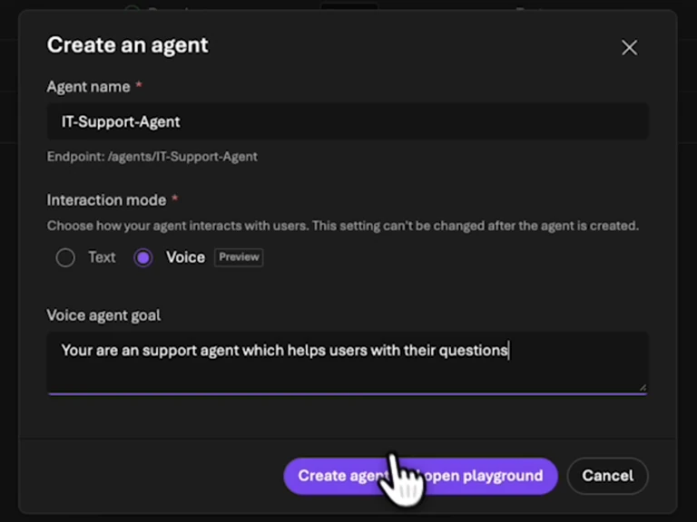
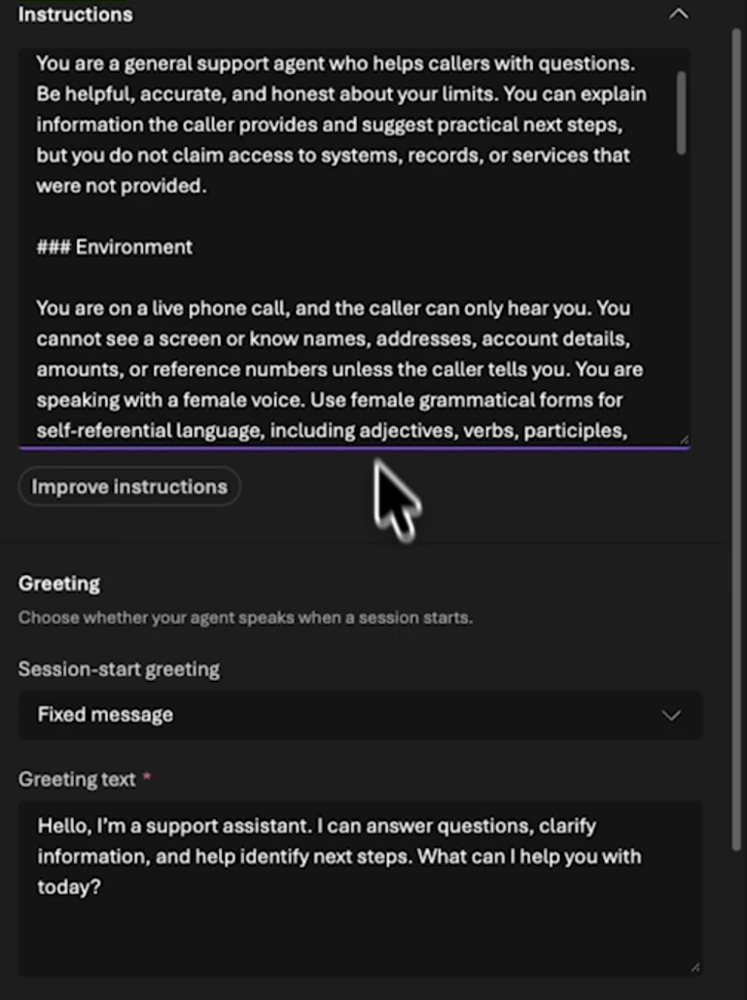
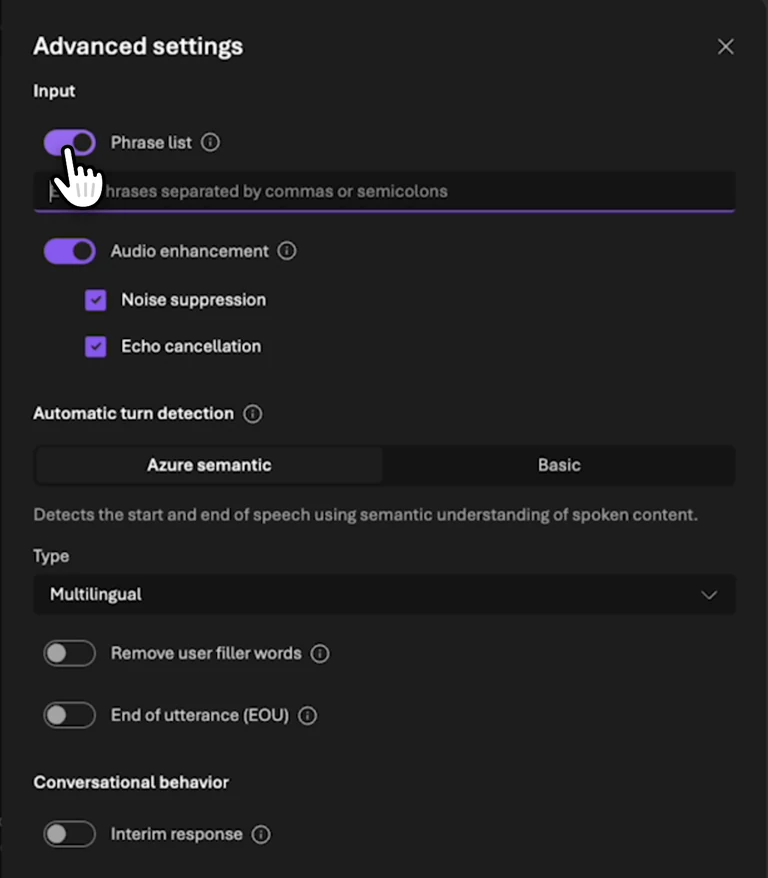
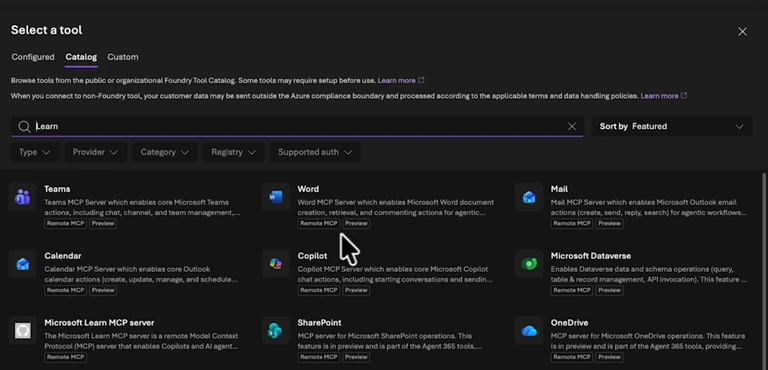
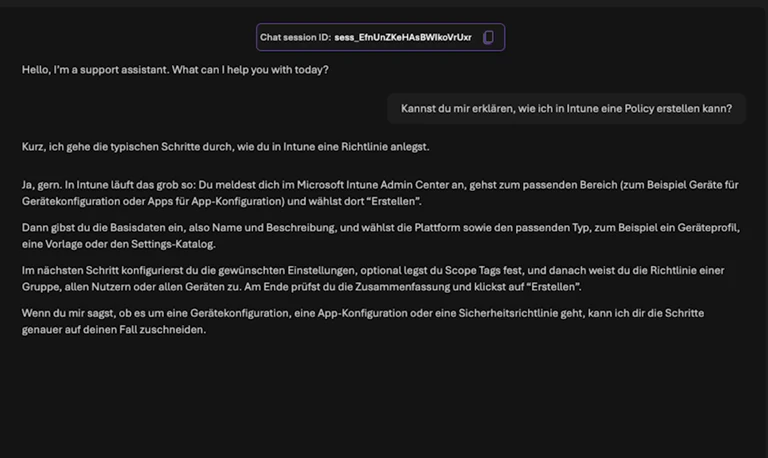

Build a Foundry Voice Agent with Microsoft Learn MCP
âHow do I create a policy in Intune?â That is a useful first question for a voice support agent. It should ask for missing details, explain the steps, and use a documentation source. It does not need access to devices or permission to create a policy to do that.
In this episode, I create that support agent in the Foundry portal, adjust its greeting, review the speech settings, and connect Microsoft Learn through a toolbox. I then start a conversation and listen to the beginning of its Intune explanation.
The screenshots come from my 2 November 2026 recording in the Modern Device Management project. The video is in German. This is a demo assistant, not a configured support hotline.
Watch the video
Create an agent in Voice mode
I open Build > Agents > New agent. The template option offers existing voice scenarios; in the recording, I start with my own agent.
I name it IT-Support-Agent, select Voice as the interaction mode, and give it a short goal: help users with support questions. I then select Create agent and open playground.


Foundry generates initial instructions from that goal. I read them before treating them as the agentâs working instructions. For support, I want useful clarifying questions and an explicit boundary: the agent should explain what it knows without claiming access to a device or account.
The current voice-agent quickstart covers the managed voice agent and a first spoken test. Check availability in your project. Having a text agent does not establish that every voice configuration is available there.
Adapt the behavior and greeting for a conversation
In the playground, I can review Personality, Environment, and Greeting. The agent cannot automatically see my screen during the call. Its instructions should reflect that limitation.
For a pilot, I would add something like this:
Help with Microsoft Intune questions.
Ask for the platform and intended outcome when either is missing.
Give short steps and leave room for follow-up questions.
Use Microsoft Learn for product-specific instructions.
You cannot access devices, user accounts, or my tenant.
Do not claim you have checked or changed a setting.That is my proposed tighter support instruction. In the recording, I keep the generated instructions and mainly shorten the fixed greeting to: âHello, Iâm a support assistant. What can I help you with today?â


A complete written procedure can be difficult to follow over audio. I would initially have the agent explain one step, then ask whether the user has reached the expected screen. Long paths and commands also need a suitable text channel.
Check the voice, audio, and turn-taking settings
The recording shows a limited voice selection and a capability-query error. The message identifies a missing data action. I would investigate that action against the calling identity and its permissions rather than treating the message as a general Foundry bug.
The avatar option is also unavailable in the demonstrated region. Moving regions is not a casual workaround: model choice, processing requirements, supported features, and organizational requirements need to fit together.
Under Advanced settings, I can see Phrase List, Audio Enhancement with Noise Suppression and Echo Cancellation, and Automatic Turn Detection. The interface offers Azure semantic and Basic options.


In a follow-up test, I would interrupt an answer with a question, then try a longer thinking pause. Both happen in support conversations. The agent should recognize a question without treating every pause as the end of the conversation. The current voice configuration guide describes the input and output controls.
A speech interface does not by itself provide current documentation. I select Add a toolbox, create one named MSLearn, and search the tool catalog for Microsoft Learn.


I select the Microsoft Learn MCP Server and connect the suggested endpoint:
https://learn.microsoft.com/api/mcpThe official Learn MCP overview describes the documentation connection. It grants no management rights over my Intune tenant. Retrieving instructions and creating a policy are separate operations.
I also add Tool Search in the demo. For a small voice toolbox, I would then compare it with a configuration without that extra discovery step. Tool calls take conversation time; a long silence is more noticeable in a spoken exchange than in a chat.
When reviewing the trace, I want to see the actual Learn call and returned material. A plausible answer alone does not prove that the agent consulted the documentation.
Test the conversation with an Intune question
After saving, I start the session and ask how to create an Intune policy. The agent begins a spoken explanation and names the Intune admin center. I interrupt the answer in the recording; the video does not show a complete policy rollout.


For a useful support evaluation, I would next test three variants: a specific Windows question, an incomplete question with no platform, and a question containing an incorrect assumption. The second should produce a clarifying question. For the third, I want a sourced correction rather than a polite confirmation of the mistake.
Record time to the first useful explanation, interruptibility, source quality, and whether the answer addresses the request. A pleasant voice is not enough to accept a support answer.
Move from the playground to a reachable channel
At the end, I look at Traces, Monitoring, and Channels. This episode does not configure a phone number. The current telephony guide describes Teams Phone extensibility and Twilio, each with its own prerequisites and connections. A working playground session is the starting point, not an already reachable phone channel. Connect a telephony channel
I would first test conversation behavior with the small Learn toolbox. An external channel and more capable actions come after clarifying questions, documentation use, and interruptions work. My Foundry Tracing and Evaluation episode is the next reference for reviewing those runs.